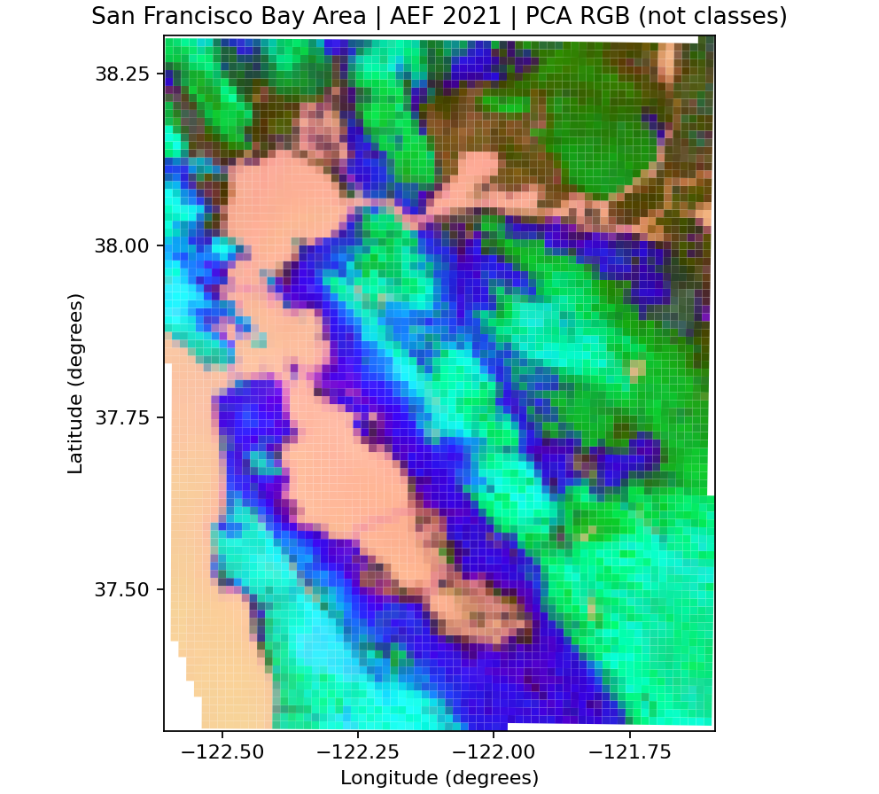
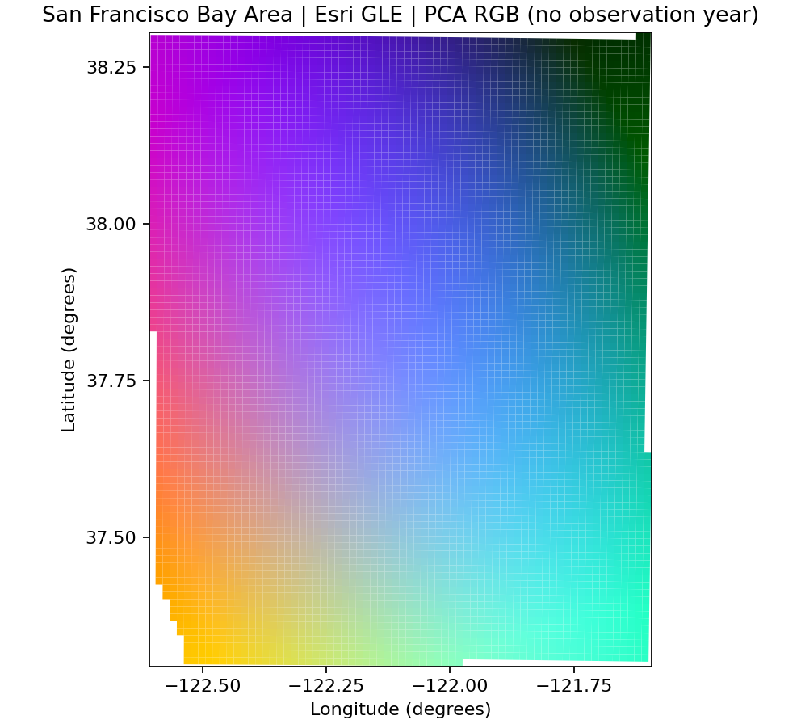
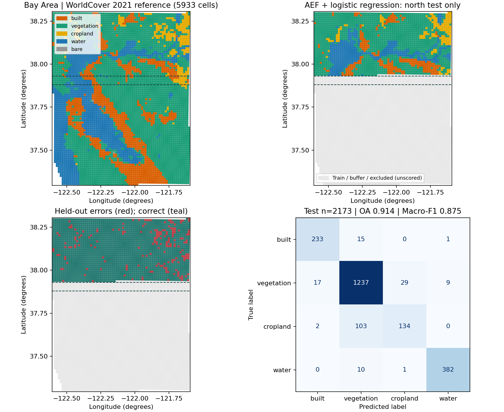

Real regional embeddings, maps and a CPU classifier¶
The San Francisco Bay Area and surroundings span approximately 88 × 111 km
inside [-122.6, 37.3, -121.6, 38.3] (west, south, east, north). The checked
2.1 MB bundle contains 5,933 real AEF 2021 cells, matching WorldCover 2021
reference labels and cell polygons. This is a regional software demonstration,
not a reproduction or extension of the paper's frozen 20-system global benchmark.
Install and draw your first map¶
Python 3.12+, CPU. Install from the repository; no PyPI release is assumed.
git clone https://github.com/GISWLH/earth-embedding.git
cd earth-embedding
python -m pip install -e ".[demo,aef]"
from earth_embedding.demo import load_demo, pca_colors, plot_map
data = load_demo("aef")
colors = pca_colors(data.features)
fig = plot_map(data.samples, colors, title="San Francisco Bay Area | AEF 2021 | PCA RGB")
fig.savefig("aef-pca.png", dpi=160)

load_demo("aef") and load_demo("bayarea") load the same data without network
access. Each payload is verified against SHA-256 in its bundled manifest; vectors
are joined to metadata by tile_id, never an assumed file row order.
These are 1,280 m official AEF overview cells, not native 10 m point samples.
Google's overviews encode normalized sums of native vectors. We decode signed
int8 values using sign(x) * (x / 127.5)**2, with -128 treated as missing.
RGB shows PCA components stretched at their 2nd/98th percentiles.
PCA colors are not land-cover classes and cannot be compared between separately
fitted maps. PCA is descriptive and is not used by the classifier.
To reproduce official GCS reads (first call needs network access):
from earth_embedding.demo import fetch_aef_demo
fresh = fetch_aef_demo(cache_dir="cache/aef")
cached = fetch_aef_demo(cache_dir="cache/aef", offline=True)
Four bounded overview reads avoid downloading entire native COGs or a global
index. The decoded array is pinned to SHA-256, then cached atomically. Raw
overview payload totals 1 MiB; actual HTTP transfer includes headers and range
overhead and was not metered. Network failures and corrupted caches raise clear
errors without substitute data. Advanced callers can use
sample_aef(points, tiles=urls, overview_level=6) directly. Omitting
overview_level retains existing native 10 m behavior.
Encode 5,933 locations with Esri GLE¶
from earth_embedding import get_location_embeddings
from earth_embedding.demo import load_demo, pca_colors, plot_map
data = load_demo("bayarea")
points = data.samples[["center_lon", "center_lat"]].to_numpy()
gle = get_location_embeddings("esri_gle", points, device="cpu", batch_size=128)
fig = plot_map(data.samples, pca_colors(gle.data), title="San Francisco Bay Area | Esri GLE | PCA RGB")
fig.savefig("esri-gle-pca.png", dpi=160)

The official lightweight Esri package (~3.7 MB) downloads once. Inference runs
directly in PyTorch without ArcGIS/ArcPy. Coordinates are [longitude, latitude].
GLE has no observation year: it encodes a geographic prior. Drawing point
features on this grid is a visualization choice, not matched area support.
Notebook 02 verifies batch consistency and local_files_only=True. Weights are
not committed and remain subject to the
Esri model terms.
Real spatial classification¶
from earth_embedding.demo import classify_demo, plot_classification
result = classify_demo()
print({k: result["metrics"][k] for k in ("oa", "macro_f1", "balanced_accuracy")})
fig = plot_classification(result)
fig.savefig("bayarea-classification.png", dpi=160)

The geographic split was fixed before scoring. South cells with maxlat <=37.88
train; north cells with minlat >=37.93 test. Intervening cells are unused.
The minimum gap between footprints is 0.0501365° latitude (about 5.6 km).
Two bare cells remain in the reference map but are outside the four-class task.
| Split | Built | Vegetation | Cropland | Water | Bare | Total |
|---|---|---|---|---|---|---|
| Train | 695 | 1864 | 9 | 815 | 0 | 3383 |
| Test | 249 | 1292 | 239 | 393 | 0 | 2173 |
| Buffer | 44 | 254 | 28 | 49 | 0 | 375 |
| Excluded class | 0 | 0 | 0 | 0 | 2 | 2 |
StandardScaler and LogisticRegression(C=1, tol=1e-8, max_iter=2000, random_state=42) fit
training features only. There is no tuning, balancing or random split.
Predictions and scores are restricted to held-out rows. Explicit float64 training
and a strict convergence tolerance avoid version-dependent float32 solver paths;
the final confusion matrix matches on Windows/scikit-learn 1.9 and Linux/1.8.
| OA | Macro-F1 | Balanced Accuracy |
|---|---|---|
| 91.39% | 87.49% | 85.65% |
These are this run's measurements, saved in metrics JSON and ID-bearing predictions CSV. Confusion-matrix rows are reference labels; columns are predictions, in the order built, vegetation, cropland, water. Gray map areas are unscored. Only nine training cells are cropland; cropland recall is 134/239. This single regional holdout has no uncertainty estimate or global generalization claim. WorldCover is a satellite-derived reference, not field-survey truth. Same-year products may share satellite signals, and the gap cannot remove all spatial autocorrelation. Coarse majority classes hide within-cell mixtures.
Sources, selection and independent rebuilding¶
The source inspection found the paper's existing global cache to be discrete samples, unsuitable for a continuous regional map. This replacement reads a bounded subset of official public products; it does not change paper data/results.
- Google / Google DeepMind AEF GCS documentation: annual 2021, four UTM 10N COGs, official overview index 6. CC-BY-4.0.
- ESA WorldCover data access: 2021 v200,
N36W123, native 10 m labels from the official public AWS COG. CC-BY-4.0. - Attribution: The AlphaEarth Foundations Satellite Embedding dataset is produced by Google and Google DeepMind. © ESA WorldCover project 2021 / Contains modified Copernicus Sentinel data (2021) processed by ESA WorldCover consortium.
Every 1,280 m cell with its center inside the bbox is considered: 5,963 candidates, 5,933 retained and 30 excluded for missing AEF values. Each retained cell has at least 95% valid reference support. WorldCover native pixel centers inside the same AEF polygon are counted, grouped, then the most frequent group is assigned (alphabetic tie break). Codes 10/20/30/90/95/100 map to vegetation, 40 to cropland, 50 to built, 80 to water, 60 to bare and 70 to snow. Zero is nodata. Selection does not use scores. Cells can extend slightly outside the center-selection bbox. Maps use transformed polygons, including south-up source rasters; neither file order nor raster row number determines north.
The installed rs_embed/data/demos/bayarea/manifest.json records exact source
URLs, pixel hashes, decoded feature hash, payload sizes, selection and license.
excluded.csv records omitted candidates. Large source rasters are not committed.
Rebuild from pinned public URLs with no private paths or index file:
python scripts/prepare_bayarea_demo.py
python examples/real_demos.py
python scripts/run_demo_notebooks.py
python scripts/validate_real_demos.py
Preparation reads four overviews and a bounded 12,142 × 12,176 WorldCover window (148 MB uncompressed; on-wire transfer varies). Initial acquisition took about 92 seconds. Allow several minutes, network access and about 1 GB free memory. Source cache pixels are checked against pinned SHA-256 values. Normal examples and notebooks use only the 2.1 MB bundled subset.
| Field | Meaning |
|---|---|
tile_id |
Stable UTM center identifier, shared with NPZ feature IDs |
center_lon, center_lat |
Cell center in WGS84 degrees |
minlon/minlat/maxlon/maxlat |
Geographic envelope for split checks |
lon0/lat0 … lon3/lat3 |
Four transformed corners of the UTM cell |
utm_easting, utm_northing |
EPSG:32610 center in meters |
class_name, dominant_fraction |
Grouped majority and its fraction |
reference_valid_fraction, aef_valid |
Reference coverage and feature validity |
demo_split |
Fixed train/test/buffer assignment before class exclusion |
features |
64-dimensional float32 official overview vectors |
Four executed notebooks¶
| Notebook | Task | Expected CPU time | First download |
|---|---|---|---|
| 01 | Regional AEF PCA map | <1 minute | None |
| 02 | GLE batching, cache and offline inference | 1–2 minutes | ~3.7 MB weights |
| 03 | Spatial holdout, metrics and maps | <1 minute | None |
| 04 | ID-safe batch export and reuse | <1 minute | None |
Each is executed from a fresh kernel with real outputs and at least one embedded map. Notebook 04 teaches reuse rather than ranking unequal spatial supports. See separate receipts for notebooks, actual AEF/GLE and README execution, and repository checks.